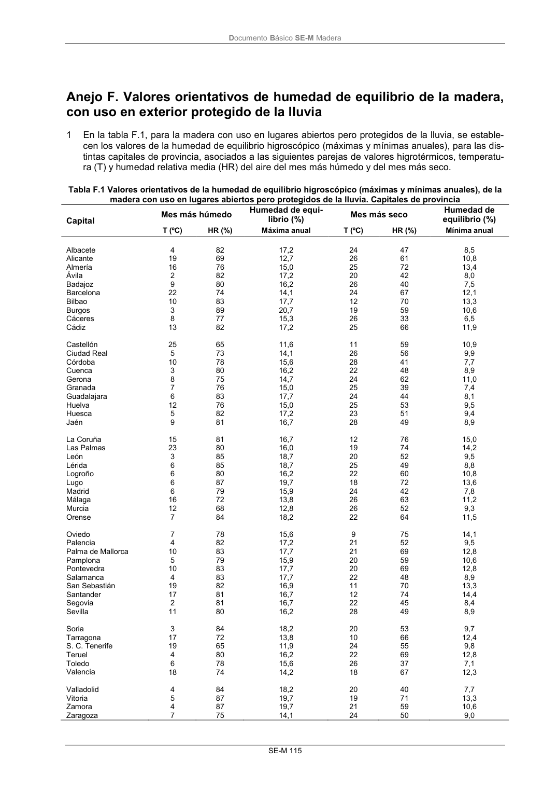

DB-SE-M Madera · edición 2019-12-20 · capa oficial
Documento DB-SE-M-oficial · SHA-256 del PDF 26b5819839ebfda78b0b119c5e76a0a37773b0d763c05688541870075df93718
Copia fiel del PDF fuente · Fuente oficial
Ficha de la disposición en la fuente oficial
Formatos: JSON del segmento · Markdown
18 < tnom, ≤ 25 Resistencia (característica), en N/mm2 Flexión paralela fm,p,0,k fm,p,90,k 18,0 9,0 16,4 8,2 14,8 7,4 perpendicular Tracción paralela ft,p,0,k ft,p,90,k 9,9 7,2 9,4 7,0 9,0 6,8 perpendicular Compresión paralela fc,p,0,k fc,p,90,k 15,9 12,9 15,4 12,7 14,8 12,4 perpendicular Cortante, en el grueso fv,p,k 6,8 6,8 6,8 Cortante, en el plano fr,p,k 1,0 1,0 1,0 Rigidez (media), en N/mm2 A flexión paralela Em,0,p Em,90,p 4930 1980 4930 1980 4930 1980 perpendicular A tracción paralela Et,0,p Et,90,p 3800 3000 3800 3000 3800 3000 perpendicular A compresión paralela Ec,0,p Ec,90,p 3800 3000 3800 3000 3800 3000 perpendicular A cortante, en el grueso Gv,p 1080 1080 1080 A cortante, en el plano Gr,p 50 50 50 Densidad, en kg/m3 Característica p,k 550 550 550 Tabla E.12. Tableros de virutas orientadas de alta prestación para uso en ambiente húmedo (OSB/4). Valores de las propiedades. OSB/4 (UNE-EN 300:2007) De alta prestación para su uso en ambiente húmedo Espesor nominal, tnom, en mm Propiedades 6 < tnom, ≤ 10 10 < tnom, ≤ 18 10 < tnom, ≤ 18 18 < tnom, ≤ 25 Resistencia (característica), en N/mm2 Flexión paralela fm,p,0,k fm,p,90,k 24,5 13,0 23,0 12,2 21,0 11,4 perpendicular Tracción paralela ft,p,0,k ft,p,90,k 11,9 8,5 11,4 8,2 10,9 8,0 perpendicular Compresión paralela fc,p,0,k fc,p,90,k 18,1 14,3 17,6 14,0 17,0 13,7 perpendicular Cortante, en el grueso fv,p,k 6,9 6,9 6,9 Cortante, en el plano fr,p,k 1,1 1,1 1,1 Rigidez (media), en N/mm2 Flexión paralela Em,0,p Em,90,p 6780 2680 6780 2680 6780 2680 perpendicular Tracción paralela Et,0,p Et,90,p 4300 3200 4300 3200 4300 3200 perpendicular Compresión paralela Ec,0,p Ec,90,p 4300 3200 4300 3200 4300 3200 perpendicular A cortante, en el grueso Gv,p 1090 1090 1090 A cortante, en el plano Gr,p 60 60 60 Densidad, en kg/m3 Característica p,k 550 550 550 DocumentoBásico SE-M Madera SE-M 115
